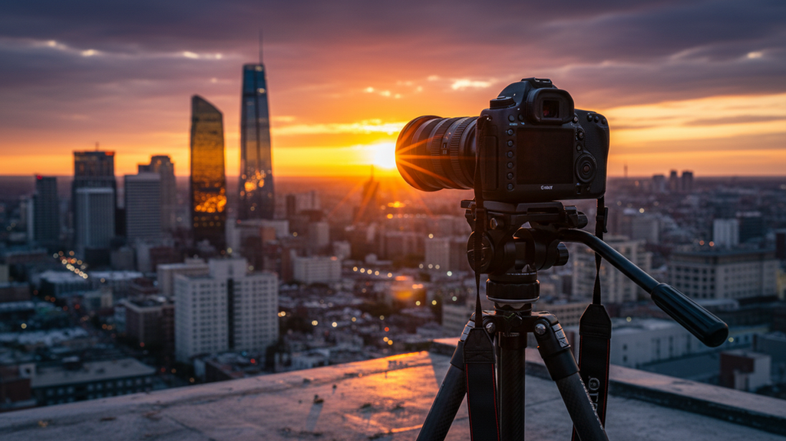
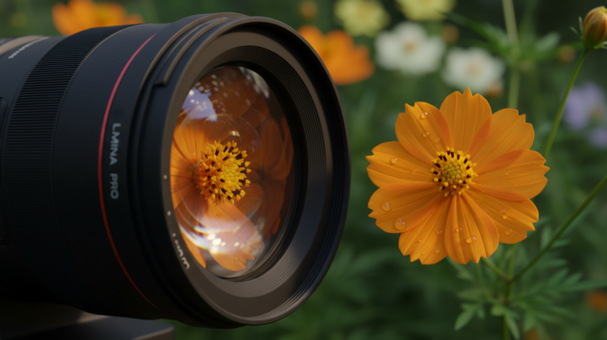

Mastering Photography and Videography for Impactful Visual Storytelling Techniques
Creating visuals that truly resonate takes more than just pointing a camera and clicking.
Creating visuals that truly resonate takes more than just pointing a camera and clicking. Over the years, I’ve learned that mastering visual storytelling techniques is the key to producing photography and videography that leaves a lasting impression. Whether you’re capturing moments for personal projects or professional work, understanding how to tell a story through your lens transforms ordinary images and videos into powerful narratives.
Let me walk you through some essential strategies and practical tips that will elevate your craft and help you create visuals that speak volumes.
Understanding Visual Storytelling Techniques
Visual storytelling is about more than just aesthetics. It’s about conveying emotions, ideas, and messages through images and videos. When you master these techniques, your audience doesn’t just see your work—they feel it.
Here are some core principles I always keep in mind:
- Composition: The way elements are arranged in your frame guides the viewer’s eye and sets the mood. Use the rule of thirds, leading lines, and framing to create balance and focus.
- Lighting: Light shapes your subject and adds depth. Natural light often works wonders, but don’t shy away from experimenting with shadows and artificial lighting.
- Color: Colors evoke emotions. Warm tones can create a cozy feeling, while cool tones might suggest calm or melancholy. Think about the story you want to tell and choose your palette accordingly.
- Movement: In videography, movement is a powerful tool. Smooth pans, tracking shots, and slow motion can add drama and keep viewers engaged.
- Emotion: Capture genuine moments and expressions. Authenticity connects with people on a deeper level.
By combining these elements thoughtfully, you create a visual narrative that’s compelling and memorable.

Practical Tips to Enhance Your Visual Storytelling Techniques
Now that we understand the basics, let’s dive into actionable steps you can take to improve your photography and videography skills.
Plan Your Shots
Before you start shooting, take time to plan. Ask yourself:
- What story do I want to tell?
- Who is my audience?
- What emotions should the visuals evoke?
Sketching a storyboard or making a shot list can save time and keep your vision clear. Planning also helps you anticipate lighting conditions and locations.
Use Your Equipment Creatively
You don’t need the most expensive gear to create impactful visuals. Learn to maximize what you have:
- Experiment with different lenses to change perspective.
- Use manual settings to control exposure, focus, and depth of field.
- Try handheld shots for a raw, intimate feel or use stabilizers for smooth motion.
Focus on Details
Sometimes, the smallest details tell the biggest stories. Close-ups of textures, hands, or objects can add layers of meaning. Don’t overlook these moments—they enrich your narrative.
Edit with Purpose
Post-production is where your story really comes together. Use editing software to:
- Adjust colors and contrast to enhance mood.
- Trim and arrange clips for pacing in videos.
- Remove distractions and sharpen key elements.
Remember, editing should support your story, not overpower it.
Crafting Stories Through Light and Composition
Light and composition are the backbone of any great visual story. I’ve found that mastering these two elements can dramatically improve the impact of your work.
Harnessing Natural Light
Natural light is versatile and flattering. Early morning and late afternoon, known as the golden hours, provide soft, warm light that adds magic to your shots. Overcast days offer diffused light, perfect for portraits and close-ups.
When shooting indoors, position your subject near windows to take advantage of natural light. Avoid harsh midday sun that creates strong shadows unless you want a dramatic effect.
Composition Techniques That Work Every Time
- Rule of Thirds: Imagine your frame divided into nine equal parts. Place your subject along these lines or intersections to create balance.
- Leading Lines: Use roads, fences, or architectural elements to draw the viewer’s eye toward the subject.
- Framing: Use natural frames like doorways or branches to focus attention.
- Symmetry and Patterns: These can create visually pleasing and harmonious images.
By consciously applying these techniques, your visuals will feel intentional and engaging.

How to Tell a Story with Movement and Sound
In videography, movement and sound are your allies in storytelling. They add layers that still images can’t capture alone.
Movement That Enhances the Narrative
Think about how your camera moves:
- Panning: Slowly moving the camera horizontally can reveal a scene or follow action.
- Tracking: Moving alongside a subject creates intimacy and involvement.
- Zooming: Use zoom sparingly to emphasize details or emotions.
- Slow Motion: Highlights important moments and adds drama.
Each movement should serve the story, not distract from it.
The Power of Sound
Sound design is often underestimated but crucial. Background music, ambient sounds, and voiceovers can set the tone and deepen emotional impact. When editing, balance audio levels carefully to ensure clarity and immersion.
Building Your Skills with Consistent Practice
Mastery doesn’t happen overnight. I recommend setting aside regular time to practice and experiment. Here’s how to keep improving:
- Challenge Yourself: Try new styles, subjects, or techniques.
- Seek Feedback: Share your work with others and listen to constructive criticism.
- Study Others: Analyze photos and videos you admire. What makes them effective?
- Keep Learning: Attend workshops, watch tutorials, and read about the latest trends.
Remember, every shot is a step forward in your journey.
Bringing It All Together
Mastering photography and videography for impactful visuals is about combining technical skills with creative storytelling. When you focus on the story you want to tell, use light and composition thoughtfully, and embrace movement and sound, your visuals will captivate and inspire.
Keep practicing, stay curious, and don’t be afraid to experiment. Your unique perspective is your greatest asset. With patience and passion, you’ll create images and videos that truly make an impact.
More articles
Storytelling for Business Use
Visual storytelling for business should be clear before it is cinematic. The viewer needs to understand who is involved, what is being offered, why it matters, and what feeling the brand wants to create. Strong lighting, composition, movement, and editing can elevate that message, but they should support the purpose rather than distract from it. For a commercial client, the story might be trust, craftsmanship, innovation, hospitality, leadership, or community impact. Once that theme is defined, every image and clip can be shaped around it.
Why Photography and Video Should Work Together
Photography and video are strongest when they are planned as one visual system. A brand may need cinematic motion for attention, still photography for websites and press, vertical clips for social media, and clean portraits for trust. When those assets are captured with a shared lighting approach, color palette, and production plan, the final campaign feels more cohesive. The viewer may not notice every technical choice, but they do feel the difference between disconnected content and a unified visual identity.
Good visual storytelling starts with purpose. Before cameras come out, the project should define what the audience needs to understand, what emotion the piece should carry, and what action the viewer should take next. For a commercial client, that may mean showing process, quality, people, place, scale, or atmosphere. For a personal brand, it may mean communicating confidence and expertise. For a film or editorial piece, it may mean building tension, rhythm, and mood. Those decisions shape lens choice, camera movement, lighting, framing, pacing, and the final edit.
The practical benefit of combining photography and video is efficiency. A well-planned production can create hero stills, behind-the-scenes clips, campaign images, interview frames, detail shots, and social assets in one organized shoot. That gives clients more value from the same production day and keeps the visual language consistent across platforms. The result is not simply more content; it is a stronger library of assets that can support marketing, recruitment, press, sales, and storytelling with a consistent level of polish.
How to Get More Value From the Session
The most useful photography projects are planned with final placement in mind. Before booking, list the places where the images will appear: website hero sections, service pages, LinkedIn, Google Business Profile, proposals, press releases, casting submissions, printed ads, menus, or social campaigns. That simple step changes how the session should be photographed. Horizontal frames need room for headlines, vertical frames need clean subject placement for mobile, and square crops need enough breathing room to avoid cutting into the subject. When those deliverables are considered before the shoot, the final gallery gives you stronger options and reduces the need for last-minute compromises.
It also helps to think about consistency across the full brand. Color, contrast, background, wardrobe, styling, retouching, and file naming all affect how professional the final images feel once they are published. For businesses, that consistency can make a website, team page, restaurant menu, architecture portfolio, or campaign deck feel more established. For individuals, it can make a headshot, biography, speaking profile, and social presence feel aligned. The goal is to create photographs that look beautiful on their own and still work hard in the real places clients need to use them.